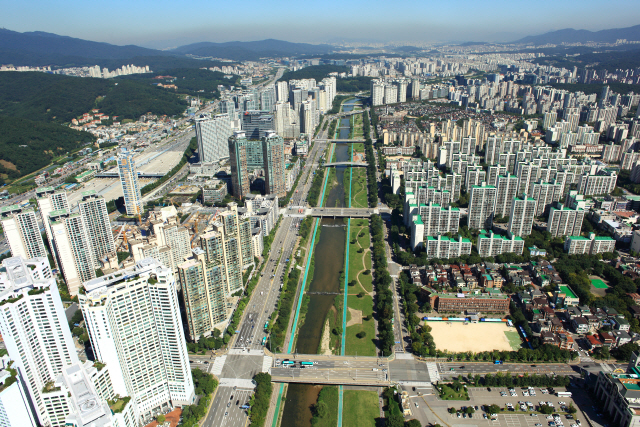
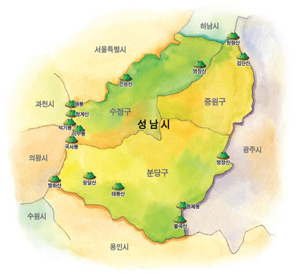
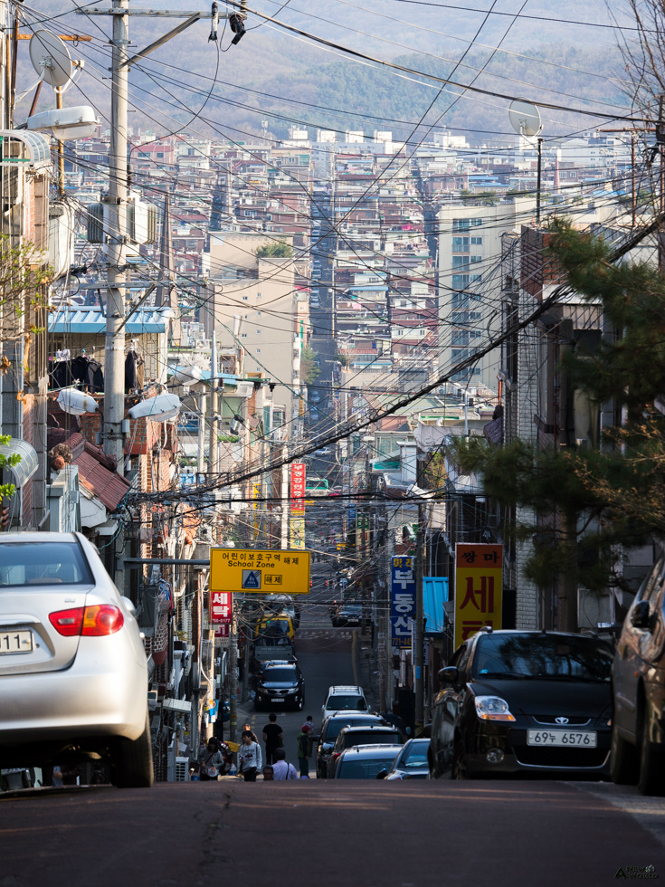
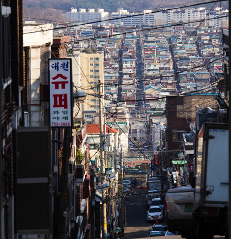

분당신도시는 경기도 성남시 분당구에 조성된 1기 신도시입니다. 1980년대에 대한민국, 특히 서울의 인구가 폭발적으로 증가하면서 주택의 수가 턱없이 부족해졌습니다. 이를 해결하기
위해
1989년 분당과 일산에
신도시를 개발할 계획이 발표되었습니다.

‘천당 아래 분당 있다’는 말처럼 분당은 최고의 주거 환경을 제공하는 것을 목표로 개발되었습니다. 당연히 입주할 수 있는 사람들은 중산층 이상의 비교적 부유한 층이었죠. 그렇다면
그
자리에 원래 살고 있던 가난한
서민들은 어떻게 되었을까요?

경기도 성남시는 세 부분으로 나뉘어집니다. 분당신도시가 위치한 분당구, 그리고 ‘구성남’으로 불리는 수정구와 중원구입니다. 재개발로 밀려난 철거민들은 대부분 이곳에 자리잡았습니다.

성남 구도심에 들어서면 가장 먼저 눈에 띄는 것이 바로 지형의 차이입니다. 이곳은 소설 ‘난쟁이가 쏘아올린 작은 공’의 배경으로 유명한 상대원고개입니다. 경사가 너무 심해 살찐
사람이
없다는 이곳에 수많은
사람들이 모여 살고 있습니다.

수정구나 중원구 거주자는 자신을 소개할 때 성남에 산다고 이야기합니다. 반면 분당구에 사는 사람은 스스로를 분당에 산다고 소개합니다. 단순한 우연일까요, 아니면 ‘상류층’ 신도심
거주자들이 스스로를 ‘하류층’ 구도심 거주자와 구분하고자 하는 심리가 작용한 것일까요?